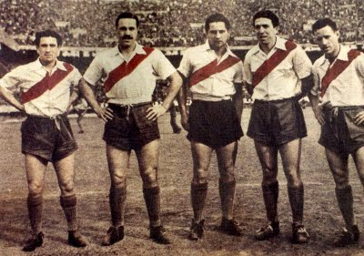

Fundacion (1901)
El 25 de mayo se funda River Plate tras la fusion de la Rosales y Santa Rosa, dos equipos del barrio de La Boca

El 25 de mayo se funda River Plate tras la fusion de la Rosales y Santa Rosa, dos equipos del barrio de La Boca
Se levanta la primera cancha del lado Este de la Darsena Sur, cerca de las Carboneras Wilson (28/05/1901)

River vence a Boca por 2 a 1 (goles de Candido Garcia y Penney) en el primer clasico de la historia, disputado en la cancha de Racing

Con el inicio del profecionalismo River compra a Carlos Peucelle, proveniente de Sportivo Buenos data-aos="fade-up" Aires, por $10.000 pesos y obtiene un apodo que sigue vigente hasta la actualidad: "Millonarios"

El 27 de septiembre de 1936 comienza la construccion del Monumental. Las obras estan a cargo del estudio Aslan y Ezcurra Arquitectos
El 26 de Mayo de 1938 ante 70.000 personas se inagura el Monumental con un amistoso enter River y Peñarol. El conjunto local vence por 3 a 1 y Carlos Peucelle antota el primer tanto en el nuevo gigante de Nuñez

Debuta Felix Loustau en la primera de River y queda conformada la delantera de "La Maquina", con Muñoz, Moreno, Pedernera, Labruna y Loustau. En su primer encuentro supera a Platense por 1 a 0.
